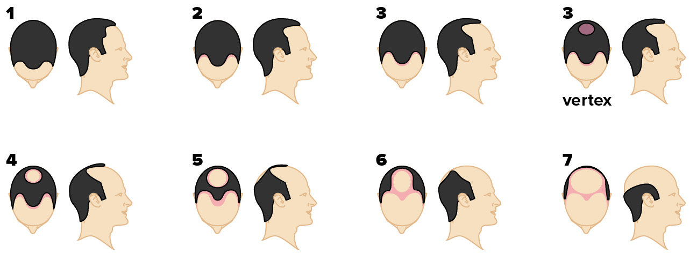

1. OPINIA TRYCHOLOGICZNA
wypadanie telogenowe
delikatna utrata gęstości włosów w okolicy czołowo-skroniowej
ferrytyna w dolnej granicy
- norma funkcjonalna - przynajmniej 50 µg/l
potencjalny niedobór witaminy D3
- norma funkcjonalna: 40 - 60 ng/ml
skóra z tendencją do łupieżu
łysienie androgenowe
1: brak oznak łysienia androgenowego
7: końcowy etap (pozostałe włosy w części potylicznej)
